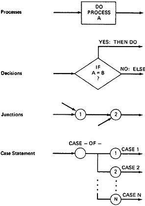
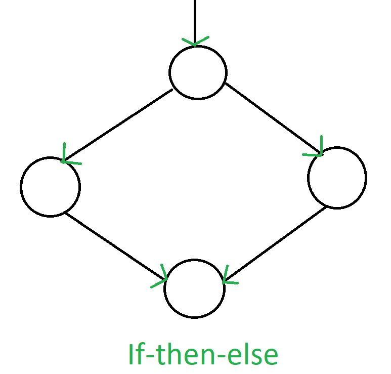
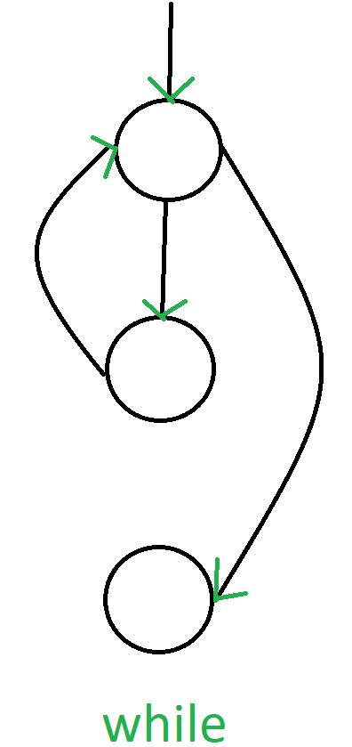
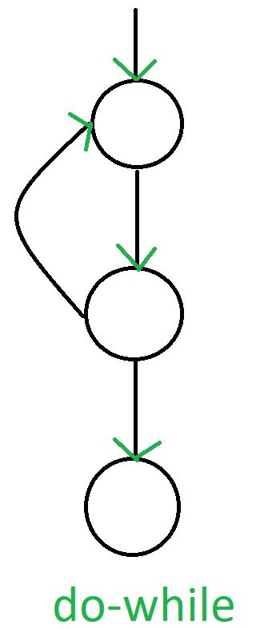

Basics of path testing:
- 1.Path Testing is the name given to a family of test techniques based on judiciously selecting a set of test paths through the program.
- 2.If the set of paths are properly chosen then we have achieved some measure of test thoroughness. For example, pick enough paths to assure that every source statement has been executed at least once.
- 3.Path testing techniques are the oldest of all structural test techniques.
- 4.Path testing is most applicable to new software for unit testing. It is a structural technique.
- 5.It requires complete knowledge of the program's structure.
- 6.It is most often used by programmers to unit test their own code.
- 7.The effectiveness of path testing rapidly deteriorates as the size of the software aggregate under test increases.
Control Flow Graphs:
- 1.The control flow graph is a graphical representation of a program's control structure. It uses the elements named process blocks, decisions, and junctions.
- 2.The flow graph is similar to the earlier flowchart, with which it is not to be confused.
Flow Graph Elements:
- A flow graph contains four different types of elements.
(1)
Process Block (2) Decisions (3) Junctions (4) Case Statements
1.Process Block:
- 1.A process block is a sequence of program statements uninterrupted by either decisions or junctions.
- 2.It is a sequence of statements such that if any one of statement of the block is executed, then all statement thereof are executed.
- 3.Formally, a process block is a piece of straight line code of one statement or hundreds of statements.
2.Decisions:
- 1.A decision is a program point at which the control flow can diverge.
- 2.Machine language conditional branch and conditional skip instructions are examples of decisions.
- 3.Most of the decisions are two-way but some are three way branches in control flow.
3.Case Statements:
- 1.A case statement is a multi-way branch or decisions.
- 2.Examples of case statement are a jump table in assembly language, and the PASCAL case statement.
- 3.From the point of view of test design, there are no differences between Decisions and Case Statements
4.Junctions:
- 1.A junction is a point in the program where the control flow can merge.
- 2.Examples of junctions are: the target of a jump or skip instruction in ALP, a label that is a target of GOTO.

Control Flow Graphs:
A Control Flow Graph (CFG) is the graphical representation of control flow or computation during the execution of programs or applications. Control flow graphs are mostly used in static analysis as well as compiler applications, as they can accurately represent the flow inside a program unit.
Characterstics of Control Flow Graph:
- 1.The control flow graph is process-oriented.
- 2.The control flow graph shows all the paths that can be traversed during a program execution.
- 3.A control flow graph is a directed graph.
- 4.Edges in CFG portray control flow paths and the nodes in CFG portray basic blocks.
- There exist 2 designated blocks in the Control Flow Graph:
- 1.Entry Block: The entry block allows the control to enter into the control flow graph.
- 2.Exit Block: Control flow leaves through the exit block.
General Control Flow Graphs:
Control Flow Graph is represented differently for all statements and loops. Following images describe it:
1.If-else

2.While

3.Do-While
